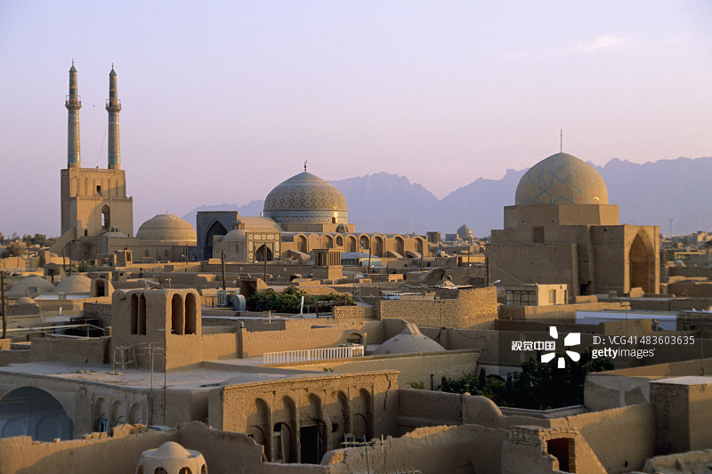
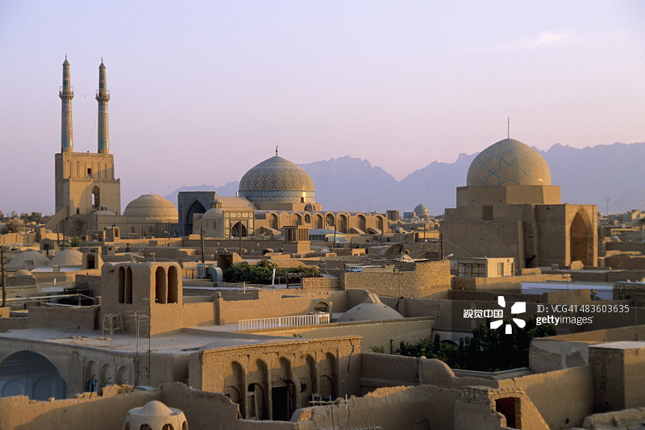

西安作为世界四大古都之一，有3000余年的建城史和1100年的建都史，其中尤以汉、唐时最为繁盛， 这也是西安对中华历史和文化影响最为巨大的时期。追根溯源，丝绸之路的开通和繁荣是西安能够发挥巨大影响力的重要条件。
由于科技条件的限制，陆路交通是汉唐时期远距离交流的最好选择。自汉代张骞“凿空”西域之后，一条通往西域的道路——丝绸之路就成为中西交通的纽带。 当时的路线东端起自古都长安，向西沟通中亚、西亚和欧洲，丝绸之路是当时中外贸易和交往的主通道，通过这条贯穿亚欧的大道，中国的丝、绸、绫、缎、绢等丝制品， 源源不断地运向中亚和欧洲，其情景恰如唐代诗人张籍在《凉州词》中所描绘的“无数铃声遥过碛，应驮白练到安西”。因此，希腊、罗马人称中国为赛里斯国，所谓“赛里斯”即丝绸之意。 19世纪末，德国地质学家李希霍芬将行走的这条东西大道誉为“丝绸之路”。德国人胡特森在《丝路》一书中沿用了这一名称。从此，丝绸之路这一称谓得到世界的承认。
.jpg)
敦煌作为丝绸之路“华戎所交，一大都会，”犹如今天的国际大都市。自汉武帝“列四郡、据两关”始，丝绸之路与阳关、玉门关、敦煌,犹如一条彩线和珍珠，相映生辉，光耀中西。 因此，丝绸之路出长安、入敦煌后，通过阳关、玉门关南北两道，贯通西域，敦煌因而被成为“丝绸之路第一枢纽”。
随着丝绸之路的畅通和繁盛，使敦煌和丝绸之路的关系紧紧地连在了一起。据《史记.大宛列传》载：自张骞出使西域后，丝绸之路呈繁荣景象，赴西域的商贾、使者， “相望与道”，“一辈大者数百，少者百人”，“一年之中，使者多十余，少者五六辈”。敦煌作为必经之地，不仅接待供应了不尽的来往使者，而且见证和传播了丝路文明和丝路传奇。
中国古代的四大发明，沿丝绸之路经敦煌而西传，为人类文明互鉴和文化交流作出了伟大的贡献。其中造纸术早在公元3世纪传入西域，公元8世纪，阿拉伯人从中国学会造纸，约公元10世纪传到埃及，公元12世纪传入欧洲。 西域和西方的物产也沿丝绸之路经敦煌一一传入，狮子、孔雀等奇兽珍禽从此在我国安家落户，繁衍后代；葱岭南北的大葱、大蒜成为人们生活的必需品； 西域及中亚各地的芝麻、苜蓿、核桃、葡萄、石榴、橄榄、芫荽、胡椒、黄瓜、蚕豆、西瓜等在我们这里生根发芽，开花结果，绵延流长。
各种宗教也沿丝绸之路经敦煌而来，佛教在公元前后传入，而后祆教、摩尼教、景教、伊斯兰教接踵而来。文艺往往是伴随宗教而来， 印度的犍陀罗艺术给中国的雕塑、绘画带来新的养分，首先在敦煌开出绚烂的花朵，这从莫高窟的北魏洞窟里可以明显看到。天文、数学、历法、医学的交流导致互相促进， 中亚、西亚的乐器传入，使汉民族音乐、舞蹈吸收了新的养料。就音乐而言，既有我国各民族人民的共同创造，又吸收外来精华。张骞从西域带来的《摩珂兜勒》乐曲，汉乐府因此发展到了十部乐， 其中八部是西北兄弟民族音乐和外国音乐。著名的《霓裳羽衣曲》是唐代东西方音乐融合的优秀作品，风靡唐代，经杨贵妃演艺，深受唐王的喜爱。白居易在《长恨歌》中曾这样写道：“渔阳鼙鼓动地来，惊破霓裳羽衣曲”。 其实，敦煌音乐在北魏时期就很时尚。如温子升《敦煌乐》云：“客从远方来，相随歌且笑。自有敦煌乐，不减安陵调”。胡旋舞是唐代最盛行的“胡舞”之一，因在跳舞时须快速不停地旋转而得名。 《通典》卷146云：“舞急转如风，俗谓之胡旋。”史书中记载，此舞主要来自西域的康国、 史国和米国等。白居易《胡旋女》—诗中曾这样生动形象的描绘：“胡旋女，胡旋女。心应弦，手应鼓。 弦鼓一声双袖举，回雪飘飖转蓬舞。左旋右转不知疲，千匝万周无已时。人间物类无可比，奔车轮缓旋风迟。曲终再拜谢天子，天子为之微启齿。胡旋女，出康居，徒劳东来万里余。”
今天，大型舞剧《丝路花雨》中的英娘形象，就是取材于敦煌壁画反弹琵琶的绝妙舞姿，剧情也是取材于丝绸之路与敦煌的传奇故事，因而又一次轰动了世界！还有那《大梦敦煌》、 《敦煌神女》等经典之作，无不吮吸了敦煌艺术无限丰美的营养，古为今用，洋为中用，推陈出新，绽放异彩
由此可见，敦煌在见证、传播丝路文明的同时，也促进了自身经济文化的发展。如唐代元宵灯会，史称“长安第一、敦煌第二、扬州第三”，可见敦煌的繁华。 今天的敦煌沙州夜市，被誉为敦煌的“夜景图和风情画”，透过异光流彩、如梦似幻的夜景和歌舞演出，使人感到梦回汉唐，激情无限……
塔什干市（乌兹别克语：Toshkent）是乌兹别克斯坦首都，塔什干州首府。就人口而言，塔什干是中亚地区第一大城市和重要的经济和文化中心。 乌兹别克斯坦的政治、经济、文化、交通中心。位于乌兹别克斯坦东部、恰特卡尔山脉西面，锡尔河右岸支流奇尔奇克河谷地的绿洲中心。
塔什干 (Tashkent) 是古“丝绸之路”上重要的商业枢纽之一，著名的“丝绸之路”便经过这里。我国古代的张骞、法显、玄奘都曾留下过足迹。 属于温带大陆性气候，冬季温和，夏季炎热，降水稀少，日照充足。有“太阳城”之称。全市分11个区。市中心为乌兹别克斯坦和该市的行政机关所在地，并为商业和文化区。 塔什干是乌兹别克语石头城的意思，具有2500年的历史。
 

两千多年来，由于伊朗地处东方和西方的十字路口，东西方融合交汇都发生在这里。民族迁徙、贸易往来 、文化交流、乃至宗教和民族冲突......无不在这里留下印痕。
伊朗，古时称为“波斯”，是一个历史悠久的文明古国，拥有众多古代文明的遗迹。历史上，它是世界文明荟萃的中心， 各种宗教、哲学思想从东西方传入伊朗，又从这里传播到世界各地，一千零一夜、阿拉丁神灯、天方夜谭，这些耳熟能详的词汇是否经常萦绕在你脑海，使波斯古国成为记忆中神秘的向往之地？
胡琴、胡萝卜、胡椒、胡桃、二胡，除了标记“胡”姓之外，小麦、黄瓜、葡萄、石榴、西瓜、大蒜、棉花、舞狮子、琵琶唢呐等等……都由丝绸之路从波斯来到中国。
俄罗斯欧洲部分和亚洲部分南部地区在古代和中世纪时期就与丝绸之路息息相关。尤其在中东地区政治不稳、东西方之间的贸易联系面临危机时，其重要作用数次凸显。 丝绸之路的数条支线是保障欧亚地区商贸往来能在数个世纪保持不断的最重要因素。近现代时期，随着国际商路重心逐渐转向海洋，丝绸之路逐渐退出了历史舞台。 然而上述地区之间建立的文化经济联系仍在不断发展，在不同程度上影响着民族文化的发展进程。直至今日，多民族和多宗教文化仍然是上述地域社会文化发展的重要因素， 这些地域的一体化进程在各个历史时期都是以互惠互利的内、外部联系为基础的。
希腊，是西方文明的发源地；中国，是东方文明的摇篮。一条穿越时间和空间的丝绸之路，成为自古以来将希腊和中国联系起来的纽带。
美国历史学家波默罗伊等人认为，早在公元前５世纪，中国的丝绸可能已经通过斯基泰人（中国《史记》《汉书》等称之为萨迦人， 是公元前８世纪至公元前３世纪活跃在中亚和南俄草原上的游牧民族）运输至希腊，这比丝绸之路正式开辟的汉朝还要早好几百年。 作为盛极一时的强大帝国，古希腊势力范围一度扩大至黑海一带，打通了获得中国丝绸以及皮毛、黄金等东方资源的通路。 从中国典籍看，至少是通过阿拉伯人，希腊在两千多年前就已经通过丝绸之路与古老的中国联系起来了。
中国敦煌研究院院长樊锦诗说，莫高窟的艺术是多种文化的交融与结晶，既有明显中国特色，又吸纳了其他民族的文明成果。 敦煌壁画里有类似希腊海妖形象的人头鸟身形象的迦陵频伽鸟，敦煌洞窟中佛像袈裟则与古希腊人大袍子的衣纹相同。 她认为，希腊文化很可能在亚历山大大帝东征以及此后的泛希腊化时期间接传到了中国。
在古代，罗马帝国是横跨欧亚非三国的政治军事经济大国，其首都罗马也是当时西方世界的政治和文化中心。 早在东汉时期，丝绸之路就连结起了中国和罗马，促进了中西方多层面的交流。这也造就了东汉王朝和罗马帝国的繁荣兴盛。
东方的文化与财富吸引着他们，大批商人开始踏足东方领土，而丝绸之路也随着商人的步伐进一步延伸到了罗马。 在丝绸之路的繁荣影响底下，罗马人变得颓靡，他们开始互相攀比，互相炫富，贵族们的生活极尽奢华。 这也导致当时的很多文学作品都在对炫富的罗马贵族进行讽刺。
因为他们缺乏素质教育与文化底蕴，导致他们曲解了东方人的奢华，在文学之士的眼里，他们的低俗品味和过度炫富促生了出了一个新名词：暴发户，指的就是那些新贵，庸俗拜金炫富没文化。 而东方的丝绸也成为了新贵们炫耀跟风的奢侈品，他们认为只有足够昂贵的绸缎才配的起他们高贵的身份。然而缺乏设计能力与审美鉴赏能力的暴发户们根本没有把丝绸的正确使用方法研究出来。 他们就这么披着一层薄薄的绸缎满大街跑，不少女性接近全裸然而不知羞耻反以为是潮流。
当然罗马的东西也经由丝绸之路传到了中国，诸如红海珍珠、玉石、天青石，还有洋葱、黄瓜、香菜、石榴、开心果，也是从当时传入中国，并且大受欢迎。 中国和罗马互相影响着，然而他们的直接交往却不多，真正串联着中国和罗马之间的贸易交流的，是波斯。 在罗马日渐意识到这个问题之后，他们决定彻底占领波斯，以达到与中国的更亲密接触，他们迫切想要知道，那个遥远而神秘的中国到底是什么样子的。
当时的波斯在新政权的带领之下，发展的非常稳定，罗马人虽然战斗能力很强，却缺少大脑。罗马对东方的物质需求， 使中间的波斯在来往于东西方的长途运输中获得暴利，波斯不断进行着变革和发展，到了公元220年前后，一个新的执政王朝——萨珊开始出现， 它推翻了独立的省级总督决策制，开始效仿中国的中央集权制度，严格的管理体系使波斯日渐强大，而罗马却因此越来越无力。 罗马帝国至此都没有占领下波斯，却被波斯不断消磨着他们的斗志，同时罗马也成了漫长边界线以外所有对手的攻击目标。 日益减少的税收和迅速增长的边防开支，使罗马皇帝戴克里先筋疲力尽，于是干脆退位什么都不管，跑到郊外种白菜去了。
威尼斯是故丝绸之路的终点站，远道而来的中国商人们在这里返航。
威尼斯（Venice）是意大利东北部著名的旅游与工业城市，也是威尼托地区的首府。威尼斯曾经是威尼斯共和国的中心，被称作“亚得里亚海明珠”， 十字军进行十字军东征时也曾在这里集结，堪称世界最浪漫的城市之一。 威尼斯市区涵盖意大利东北部亚得里亚海沿岸的威尼斯潟湖的118个岛屿和邻近一个半岛， 更有117条水道纵横交叉。这个咸水潟湖分布在波河与皮亚韦河之间的海岸线。威尼斯的风情总离不开“水”，蜿蜒的水巷，流动的清波，宛若默默含情的少女， 眼底倾泻着温柔。其建筑、绘画、雕塑、歌剧等在世界有着极其重要的地位和影响。威尼斯有“因水而生，因水而美，因水而兴”的美誉，享有“水城”“水上都市”“百岛城”等美称。